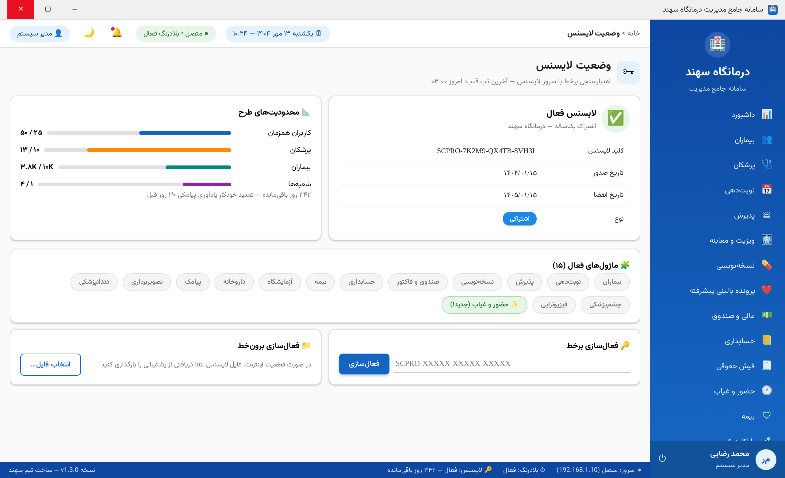
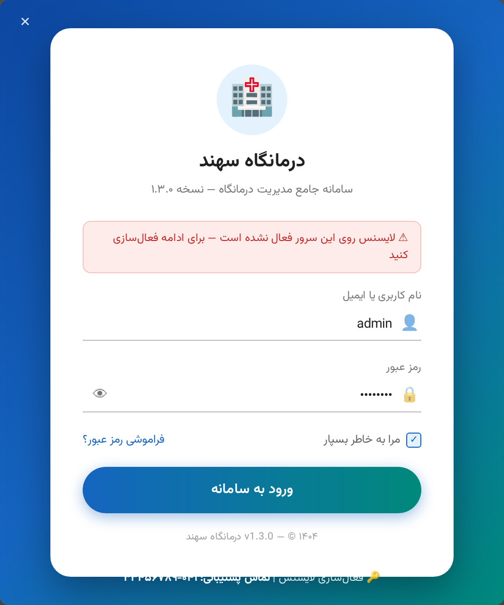

نصب سرور • پیکربندی شبکه • اتصال دستگاه حضور و غیاب • فعالسازی لایسنس
| 📖 نسخه سند | ۲.۰ — مهر ۱۴۰۴ |
| 🏷 نسخه نرمافزار | v1.4.0 |
| 👥 مخاطب | مدیر شبکه و ادمین درمانگاه |
| ⏱ زمان نصب تخمینی | ۹۰ تا ۱۲۰ دقیقه |
سامانه درمانگاه سهند با معماری سرور-کلاینت کار میکند: یک رایانه مرکزی (سرور) به عنوان میزبان دیتابیس و API عمل میکند و رایانههای کاربران (کلاینتها) از طریق شبکه محلی به آن متصل میشوند. سرور لایسنس جداگانه روی هاست اینترنتی قرار میگیرد و دستگاه حضور و غیاب مستقیماً به شبکه محلی متصل است.
☁️ اینترنت
│
┌──────────┴──────────┐
│ 🌐 سرور لایسنس PHP │ (هاست cPanel — اختیاری اما توصیهشده)
│ license.example.ir │
└──────────┬──────────┘
│ HTTPS (پورت 443)
┌───────────────────────────┴───────────────────────────────┐
│ 🏥 شبکه محلی درمانگاه (LAN) │
│ │
│ ┌─────────────────┐ ┌──────────────────────┐ │
│ │ 💻 سرور اصلی │◄──────►│ 🕐 دستگاه حضور و غیاب │ │
│ │ Windows Server │ TCP │ ZKTeco — 192.168.1.201│ │
│ │ 192.168.1.10 │ 4370 └──────────────────────┘ │
│ │ • SQL Server │ │
│ │ • API (IIS/سرویس)│ ┌──────────────────────┐ │
│ └───┬──────┬───────┘ │ 🖨 پرینتر شبکه │ │
│ │ │ └──────────────────────┘ │
│ ┌───┴──┐ ┌─┴────┐ ┌────────┐ ┌─────────┐ │
│ │💻پذیرش│ │💻ویزیت│ │💻صندوق │ │💻انبار │ ← کلاینتها │
│ └──────┘ └──────┘ └────────┘ └─────────┘ │
└───────────────────────────────────────────────────────────┘
| مؤلفه | حداقل | توصیهشده |
|---|---|---|
| سیستمعامل | Windows 10 Pro 64bit | Windows Server 2019/2022 |
| پردازنده | ۴ هسته ۲.۴GHz | ۸ هسته یا Xeon |
| حافظه RAM | ۸ گیگابایت | ۱۶ گیگابایت |
| دیسک | SSD ۲۵۶GB | SSD NVMe ۵۱۲GB + RAID |
| شبکه | کارت گیگابایت | گیگابایت + UPS |
| مؤلفه | حداقل | توصیهشده |
|---|---|---|
| سیستمعامل | Windows 10 (64bit) | Windows 11 |
| پردازنده و RAM | ۲ هسته + ۴GB | ۴ هسته + ۸GB |
| نمایشگر | ۱۳۶۶×۷۶۸ | Full HD ۱۹۲۰×۱۰۸۰ |
| نرمافزار پیشنیاز | .NET 8 Desktop Runtime (در بسته نصبی خودکار نصب میشود) | |
| نرمافزار | نسخه | لینک دریافت | توضیح |
|---|---|---|---|
| SQL Server | 2019 Express+ / 2022 | microsoft.com/sql-server | نسخه Express رایگان تا ۱۰GB کافی است |
| SQL Server Management Studio | ۱۹ یا بالاتر | همان صفحه | مدیریت دیتابیس |
| .NET 8 Hosting Bundle | ۸.۰.x | dotnet.microsoft.com | اجرا زیر IIS |
| نرمافزار سهند | v1.4.0 | رلیز گیتهاب | بسته نصبی سرور |
sa تعیین کنید (نوشتن رمز در محل امن الزامی است).
SQL Server Network Configuration → Protocols for MSSQLSERVERIPسرور,1433 (مثلاً 192.168.1.10,1433) و Authentication از نوع SQL Server متصل شوید — اگر اتصال برقرار شد، دیتابیس برای شبکه آماده است.SahandClinicPro-Setup-v1.4.0.zip را روی رایانه سرور استخراج کنید و INSTALL-SERVER.bat را با دسترسی Administrator اجرا کنید. اسکریپت بهصورت خودکار:
C:\SahandClinicPro\Server منتشر میکندSahandClinicPro.API را با شروع خودکار ثبت میکندappsettings.json در پوشه نصب را ویرایش کنید:
{
"ConnectionStrings": {
"DefaultConnection": "Server=192.168.1.10;Database=ClinicProDb;
User Id=sa;Password=رمزشما;TrustServerCertificate=True;"
},
"Jwt": {
"SecretKey": "یک-کلید-تصادفی-حداقل-۶۴-کاراکتری-منحصربهفرد"
}
}
openssl rand -base64 48 یا ابزار Password Generator بسازید.cd C:\SahandClinicPro\Server dotnet Sahand.ClinicPro.API.dll ef database updateخروجی موفق: پیام
Applying migration '20261005101427_AttendanceDeviceModule' — یعنی ۹۳ جدول شامل جداول حضور و غیاب ساخته شده است.
net start SahandClinicPro.APIسپس در مرورگر سرور نشانی
http://localhost:5000/health را باز کنید — پاسخ {"status":"Healthy"} یعنی سرور زنده است. Swagger روی /swagger و داشبورد کارهای زمانبندی روی /hangfire در دسترساند.

نمای ماژولهای فعال در کلاینت — سرور تمام ۲۴ ماژول را از سرور لایسنس دریافت میکند
SahandClinicPro-Setup-v1.4.0.exe را اجرا کنید. نصاب Inno Setup تمام پیشنیازها (شامل .NET 8 Desktop Runtime) را خودکار نصب میکند و میانبر روی دسکتاپ و منوی استارت میسازد.
| حالت | نشانی |
|---|---|
| سرور در همان رایانه | http://localhost:5000 |
| سرور روی شبکه محلی | http://192.168.1.10:5000 |

پنجره ورود — پیش از فعالسازی لایسنس، هشدار فعالسازی نمایش داده میشود
SahandClinicPro-Setup-v1.4.0.exe /SILENT — بدون تعامل کاربر نصب میشود؛ مناسب ۲۰ کلاینت با ابزارهای انتقال نرمافزار (PDQ/GPO).